Kevin Shu
An integer linear program is an optimization problem of the form
| min | $c^{\intercal}x$ |
| such that | $Ax \le b$ |
| $x \in \Z^n$ |
Some variables can be allowed to be continuous.
The min can be a max. The inequalities can go the other way. Equalities are also allowed.
| min | $x_1$ |
| such that | $2x_1 + 3x_2 \le 3$ |
| $x_1, x_2 \ge 0$ | |
| $x \in \Z^2$ |
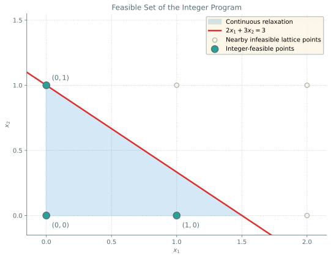
We have a number of cookies that we need to bake. We want to put all of the cookies on a baking sheet without overlapping.
For simplicity, we will imagine that each cookie is a rectangle (though we can model other shapes easily).
We will also want to discretize each rectangle, so that they are composed of small square `pixels'.
We are given $K$ cookie sheets, each one of size $\ell \times w$.
We also have $B$ cookies, and cookie $i$ is a rectangle of size $a_i \times b_i$.
Each cookie has a number of places it can be located; we need to choose such a location for each cookie, and cookies cannot overlap.
First, we decide whether to use each cookie sheet.
Let $y_k$ be a variable that is 1 if cookie sheet $k$ is used, and 0 otherwise, for $k = 1,\dots, K$.
Second, we decide where each cookie goes.
Cookie $i$ can be located on many different places.
We must put each cookie in exactly one location, so for each $i \le B$ \[ \sum_{k=1}^K \sum_{r = 1}^{\ell - a_i + 1}\sum_{c = 1}^{w - b_i + 1} x_{ikrc} = 1. \]
We can only place one cookie in each cell of a sheet, and we can only put a cookie at that location if that sheet is used.
So for each $k = 1, \dots, K$, each $r = 1,\dots,\ell$, and each $c = 1,\dots,w$, \[ \sum_{i=1}^B \sum_{r' = r-a_i+1}^{r}\sum_{c' = c-b_i+1}^{c} x_{ikr'c'} \le y_k. \]
Notice how this ties the placement variables back to $y_k$: a cell can only be filled on a sheet we actually use.
The objective here is simple; we want to use as few cookie sheets as possible, which is given by $\sum_{k=1}^K y_k$.
Assembling
| min | $\sum_{k=1}^K y_k$ | |
| such that | $ \sum_{k=1}^K \sum_{r = 1}^{\ell - a_i + 1}\sum_{c = 1}^{w - b_i + 1} x_{ikrc} = 1 $ | for $i=1,\dots,B$ |
| $ \sum_{i=1}^B \sum_{r' = r-a_i+1}^{r}\sum_{c' = c-b_i+1}^{c} x_{ikr'c'} \le y_k $ | for each $k =1,\dots,K$ | |
| for each $r =1,\dots,\ell$ and $c = 1,\dots,w$ | ||
| $0 \le x_{ikrc} \le 1$ | ||
| $0 \le y_k \le 1$ | ||
| $x_{ikrc}, y_k \in \Z$ |
What if the cookies here are not rectangles, but rather circles? What if we allow rotations?
It will be very complicated to keep track of all of the variables!
We would need a way to organize these constraints in a neater way, so that we can more easily describe the problem.
Abstractly, for each cookie, there is a set of configurations for that cookie.
The configurations for each cookie are not independent; we must ensure they don't overlap!
Two configurations are compatible as long as they don't overlap. If I have a collection of configurations for each cookie, then as long as each pair is compatible, the collection of configurations is compatible.
We want a way to record all of the possible configurations, and which pairs overlap, and then choose a configuration so that every pair is compatible.
A graph $G = (V,E)$ consists of a set of `vertices' $V$ and a set of `edges' $E$.
Formally, an edge is an unordered pair $\{i,j\}$, where $i$ and $j$ are in the vertex set.
Graphs can be visualized as a picture where the vertices are points, and the edges are lines.
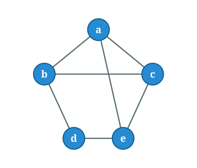
The cycle $C_n$ has $n$ vertices arranged in a ring, each joined to its two neighbours.
We can think of every vertex as labelled by an integer so that $V = \{1,2,3,4,5,6\}$, and we have edges \[E = \{\{1,2\}, \{2,3\},\{3,4\},\{4,5\},\{5,6\},\{1,6\}\}\]
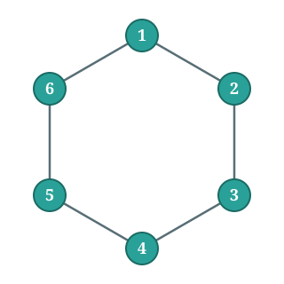
In the complete graph $K_n$, every pair of distinct vertices is joined by an edge.
In a bipartite graph the vertices split into two groups, with edges only going between the groups.
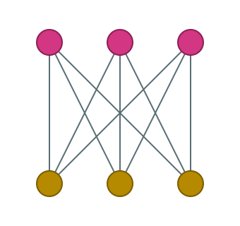
Let each person be a vertex, and join two people by an edge whenever they are friends.
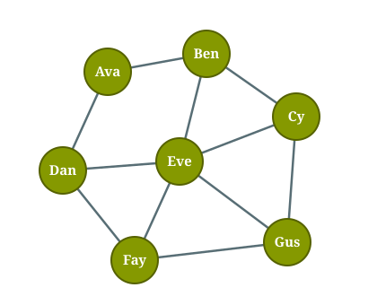
Let each city be a vertex, and join two cities by an edge when there is a direct road between them.
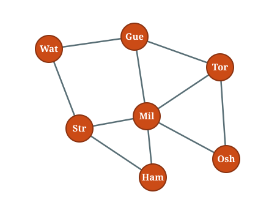
A graph problem is an algorithmic problem that takes in as input a graph (given as a list of vertices and edges).
Many of these problems can be written as integer programs. We will look at two in detail: the clique problem and the matching problem.
Let $G = (V, E)$ be a graph. A set of vertices $S \subseteq V$ is a clique if every pair of vertices in $S$ is joined by an edge.
In other words, the vertices in $S$ are pairwise adjacent: every two vertices you pick are connected by an edge.
The maximum clique problem asks for a clique with as many vertices as possible.
The green vertices $\{a, b, c\}$ form a clique: all three edges $ab$, $ac$, and $bc$ are present.
We could not add $d$, since $d$ is not adjacent to $a$ or $c$.
Is $\{a, b, c\}$ the largest possible? No four vertices are pairwise adjacent here, so this is a maximum clique of size $3$.
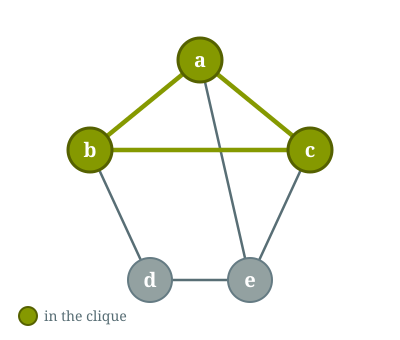
In the complete graph $K_n$, every pair of distinct vertices is joined by an edge.
The maximum clique then consists of all of the vertices in the graph.
In the cycle $C_n$, every edge forms a clique, but no set of 3 vertices form a clique.
The maximum clique then consists of any edge.
Suppose that we only have one baking sheet, and we want to pack as many cookies as we can into the sheet.
We can turn this into a clique problem using a compatibility graph.
Each cookie configuration is a vertex. Two configurations are joined by an edge if they don't overlap.
Consider a $3 \times 3$ tray with a big cookie $A$ ($2 \times 2$) and a finger cookie $B$ ($1 \times 2$). Here are five candidate placements.
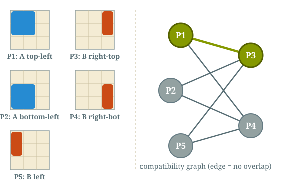
A clique consists of a list of cookie configurations where no pair overlaps.
A valid cookie configuration is exactly a clique of the compatibility graph, and packing as many cookies as possible is finding a maximum clique.
A clique is a collection of vertices in a graph so that every pair of vertices is connected by edge.
Can we represent the clique problem with an ILP?
What are the decisions? What are the constraints?
Decisions are which vertices are in the graph. Make an indicator variable $x_i$ for each $i \in V$.
Constraints require that if $x_i$ and $x_j$ are both 1, then they are joined by an edge. For all $i,j \in V$ so that $\{i,j\} \not \in E$, \[ x_i + x_j \le 1. \]
Objective is the number of vertices in the clique: $\sum_{i \in V} x_i.$
| max | $\sum_{i \in V}x_i$ |
| such that | $x_i + x_j \le 1$ for any $\{i,j\} \not \in E$. |
| $0 \le x_{i} \le 1$ | |
| $x_{ij} \in \Z$ |
There are $N$ people at a party, and $N$ meals have been prepared.
Each person has some meals that they might want, and others they don't.
Given the information about people's food preferences, how can we determine if there is a way of giving everyone a meal they want?
A bipartite graph is a graph whose vertex set can be divided into two disjoint parts $V = V_1 \cup V_2$ with $V_1 \cap V_2 = \varnothing$, and every edge $e \in E$ consists of one element from $V_1$ and one element from $V_2$.
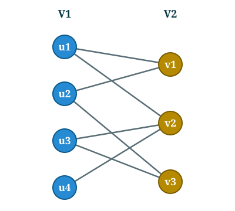
A matching in a bipartite graph is a collection of edges in that graph so that no two edges in the collection share a vertex.
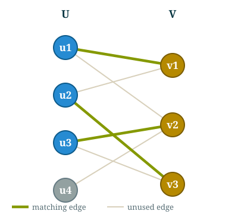
A maximum matching is a matching with at least as many edges as any other matching in the graph. A perfect matching is a matching where every vertex has a matched vertex.
Put the people on one side and the meals on the other.
Join a person to a meal by an edge whenever that person would be happy with that meal.
This is a bipartite graph: every edge goes from a person to a meal, never person-to-person or meal-to-meal.
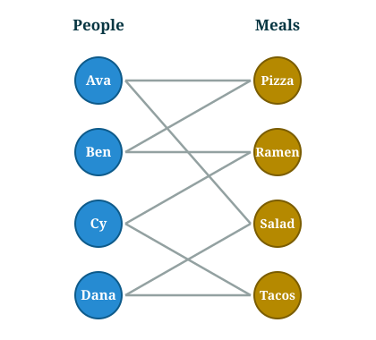
A matching is a set of edges, no two of which share an endpoint: each person gets at most one meal, and each meal goes to at most one person.
Giving everyone a meal they want means finding a matching that covers all $N$ people, called a perfect matching.
The green edges are one perfect matching: Ava–Salad, Ben–Pizza, Cy–Ramen, Dana–Tacos.
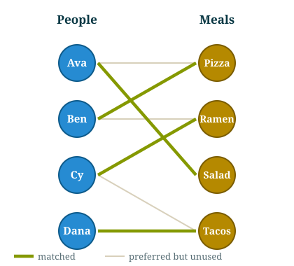
How can we model maximum bipartite matching as a integer program?
What should the variables be?
For each edge, we need to decide whether it is part of the matching or not.
For each edge $\{i,j\}$, introduce a variable $x_{ij}$ that is 1 if that edge is in the matching and 0 otherwise.
Variables correspond to edges, constraints correspond to vertices.
For every vertex, there can be at most one incident edge. For each $i \in V$, \[ \sum_{j : \{i,j\} \in E}x_{ij} \le 1. \]
We want as many edges in the matching as possible.
To count the number of edges in the matching, sum up the indicator variables. \[ \max \sum_{\{i,j\} \in E}x_{ij} \]
| max | $\sum_{\{i,j\} \in E}x_{ij}$ | |
| such that | $\sum_{j : \{i,j\} \in E}x_{ij} \le 1$ | for each $i \in V$ |
| $0 \le x_{ij} \le 1$ | ||
| $x_{ij} \in \Z$ |
It turns out that the integrality constraints are not necessary! Matching can be solved with an LP.
A restaurant needs to build next week's schedule for its chefs.
There are $m$ chefs and $n$ shifts during the week.
Each chef $i$ must be assigned to exactly $d_i$ shifts, and each shift must have exactly one chef working it.
Each chef also has time conflicts: some shifts they simply cannot work.
How can we model this as a matching problem?
Put the chefs on one side and the shifts on the other, forming a bipartite graph.
Join chef $i$ to shift $j$ by an edge only when chef $i$ can work shift $j$.
Does a matching in this graph correspond to a valid schedule? No! Each chef must work multiple shifts.
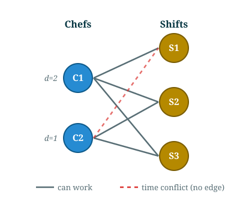
A plain matching would give each chef only one shift. But chef $i$ works $d_i$ shifts.
So make $d_i$ copies of each chef $i$.
Join a copy of chef $i$ to shift $j$ exactly when chef $i$ can work shift $j$ (respecting the conflicts).
A perfect matching on this graph gives a valid schedule: each chef copy takes one shift, so chef $i$ works exactly $d_i$ shifts, and each shift is matched to exactly one chef.
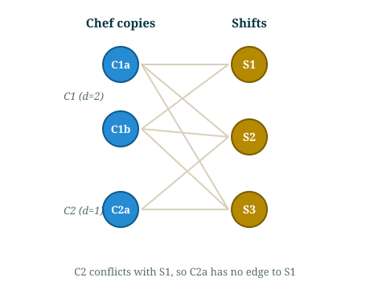
A perfect matching on this graph gives a valid schedule: each chef copy takes one shift, so chef $i$ works exactly $d_i$ shifts, and each shift is matched to exactly one chef.
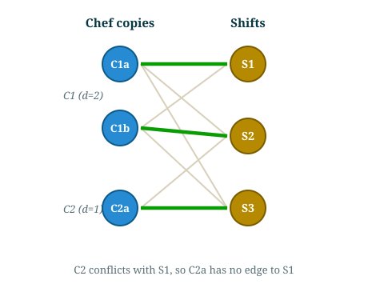
What if each shift requires multiple chefs?
The duplicating trick does not work; 2 copies of the same chef might be assigned to the same shift, which would not be physical.
If there are multiplicities in both the shift numbers, then we can model this as a flow problem. We'll see what those are later.
Let us look at a few small bipartite graphs and their maximum matchings.
In each picture the green edges form a matching, and a grey vertex is one left unmatched.
Here both sides have three vertices. Can we match all of them?
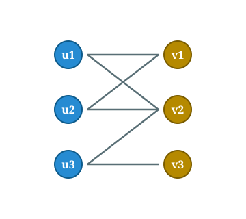
Here both sides have three vertices, and we can match all of them.
Every vertex is covered, so this matching is perfect. A perfect matching is always a maximum matching.
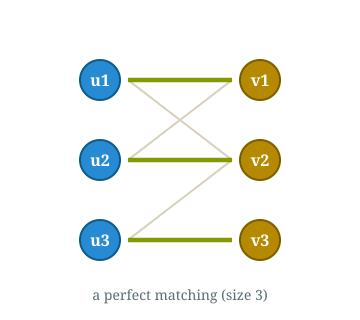
Now the left side has four vertices but the right side has only two.
A matching can use at most two edges, since each of the two right vertices takes at most one.
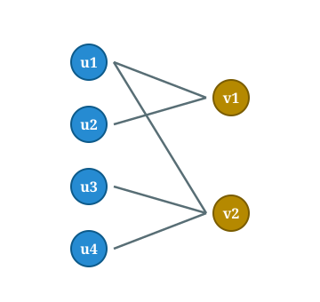
Now the left side has four vertices but the right side has only two.
A matching can use at most two edges, since each of the two right vertices takes at most one.
So the matching shown is maximum (size $2$), but it cannot be perfect: two left vertices stay unmatched.
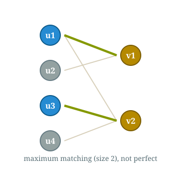
Here both $v_2$ and $v_3$ are only adjacent to $u_3$.
A single vertex $u_3$ cannot be matched to two partners, so no matching can cover both $v_2$ and $v_3$.
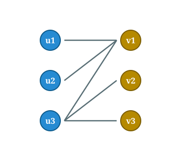
Here both $v_2$ and $v_3$ are only adjacent to $u_3$.
A single vertex $u_3$ cannot be matched to two partners, so no matching can cover both $v_2$ and $v_3$.
The best we can do has size $2$, leaving one right vertex unmatched: there is no perfect matching.
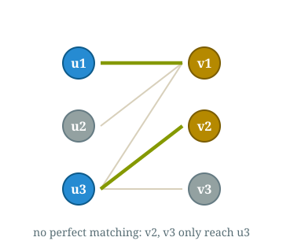